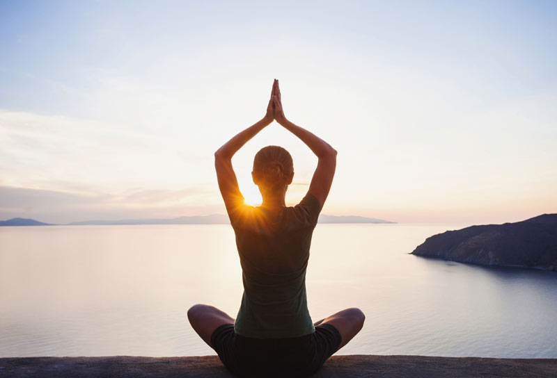

Historia del Yoga
El Yoga es una práctica que nace en Oriente, y tarda cientos de años en ser conocida en Europa. El yoga (del sánscrito ioga, que significa "unión") se refiere a una tradicional disciplina física y mental que se originó en la
India. La palabra se asocia con prácticas de meditación en el hinduismo, el budismo y el jainismo. Algunos autores creen que el yoga tiene una antigüedad de más de 5.000 años, aunque hay otros que consideran que nació dentro del
marco de los "Veda", es decir, los textos más antiguos de la literatura india. Las primeras referencias de esta práctica se descubrieron en yacimientos arqueológicos en el valle de Indo (actual Pakistán) donde fueron hallados sellos
de piedra y una gran cantidad de figuras de personas realizando las típicas asanas de yoga y meditación. Por ello, se relaciona el yoga con la civilización de Indus-Saravasti.
Historia del yoga en Occidente
Occidente tuvo que esperar hasta los años 60 para descubrir el yoga. Maharishi Mahest popularizó esta práctica centrándose en la meditación, mientras Swami Sivananda fue ganándose la fama de gurú con su sistema yóguico basado en
cinco principios: la Savasana (relajación), la Pranayama (respiración) las asanas (ejercicios), la Dhyana (pensamientos positivos) y la meditación. Desde entonces, el yoga ha viajado en el espacio y en el tiempo hasta convertirse
en un fenómeno mundial. Las técnicas han evolucionado, pero los movimientos y los ideales originales se han mantenido. Una alternativa en Occidente contra el estrés y la ansiedad que causa el ritmo de la vida moderna. Además,
la Organización Nacional de las Naciones Unidas (ONU) declaró el 21 de junio como Día Internacional del Yoga. En resumen, la milenaria práctica y cultura del Yoga debe su origen a los sabios de la antigüedad y la revelación
de sus enseñanzas que, generación tras generación, han llegado hasta nuestros días. Con el paso del tiempo, el yoga se ha convertido en todo una filosofía de vida que gana adeptos a diario en todos los lugares del planeta.
¿Por qué decidí integrar el Yoga a mi vida?
Comencé por sugerencia de mi hermana, lleva más de 20 años en este camino. Ella me regaló un mat y me estimuló para comenzar a tomar clases, lo que hice por tres años hasta que en 2017 comencé el instructorado de yoga, quería saber
un poco más de esta hermosa experiencia que es el Yoga. ¡Y me encantó!
El yoga es un estilo de vida, una cosa lleva a la otra indefectiblemente. Un ejercicio adecuado, que ayude a sanar y crecer el cuerpo dándole flexibilidad, fortaleza y vitalidad. Una buena respiración que ayude a oxigenar
bien el cuerpo y la mente para que todo funcione mejor. Una alimentación sana, que ayude a cuidar el cuerpo.

La dieta no sólo incluye los alimentos que comemos, sino todo lo que absorbemos a través de los cinco sentidos. Relajación adecuada, permitiendo que todos los sentidos se desconecten por un momento. Mantener un pensamiento positivo, que active el sistema
nervioso parasimpático y así ayude a mejorar el funcionamiento general y mantiene la homeostasis del cuerpo (autorregulación). Y meditar, que es conectar los cinco sentidos en un punto. La meditación trae tranquilidad a la mente
y eso se ve reflejado en tu vida diaria.
Estos son los puntos sobre los que trabajo a diario, es un trabajo constante a veces más fácil, a veces no tanto, pero siempre lo hago convencida¡ de que es el camino que quiero seguir para sumar bienestar a mi vida .
Lugares donde me perfeccioné
- Ayur Yoga Vital (2017): Instructorado de Yoga
- Yoga Baires (2017): Especializacion Yoga y Embarazo
- Mass Yoga (2018): Yoga y Ayurveda
- Fundación Indra Devi (2019): Yoga Para Embarazadas
- Mariana Bacas Osteopatía y Yoga (2020): Curso Taller de Columna Vertebral
¿Te gustaría inciarte en esta hermosa y milenaria practica?